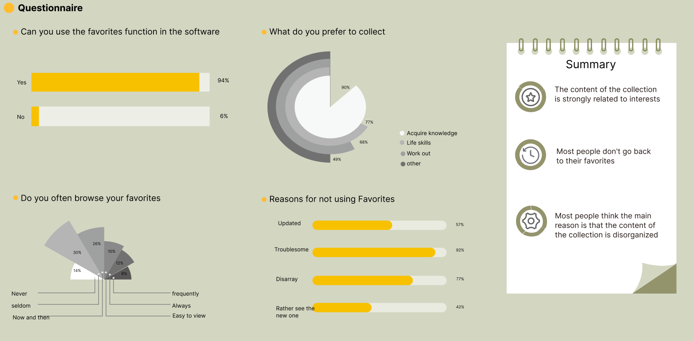
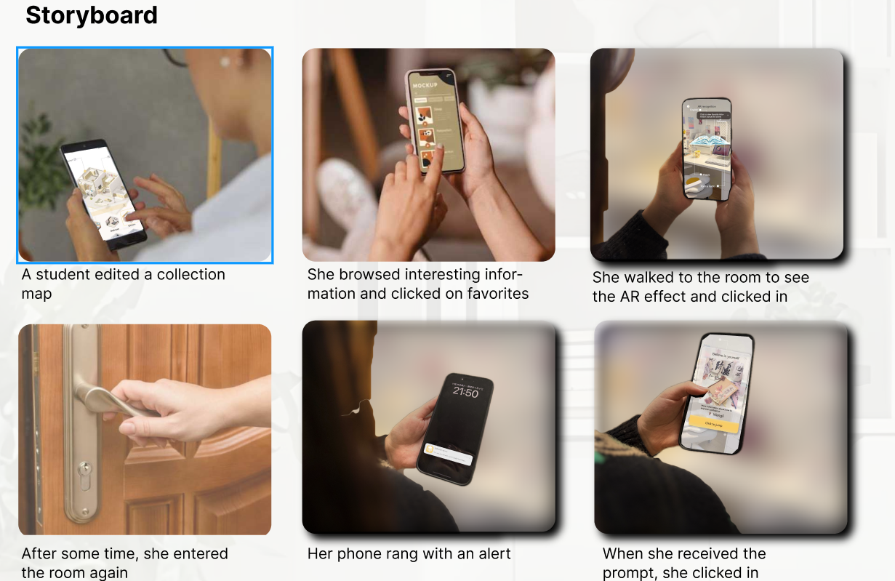
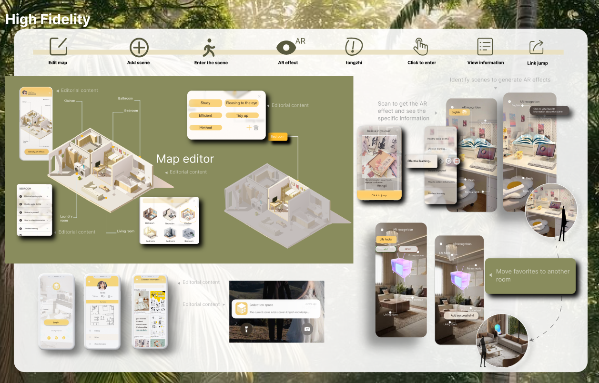
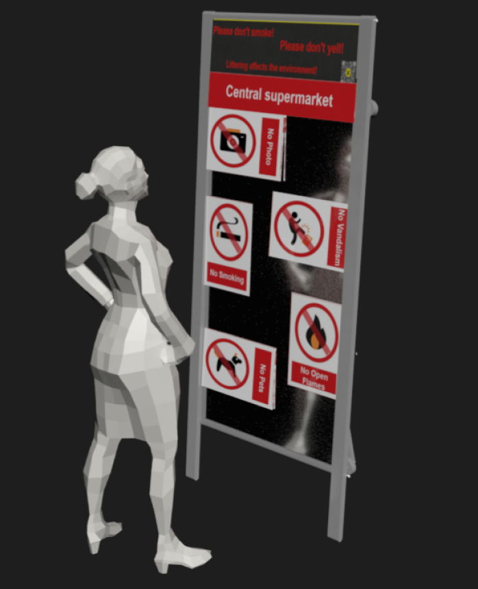
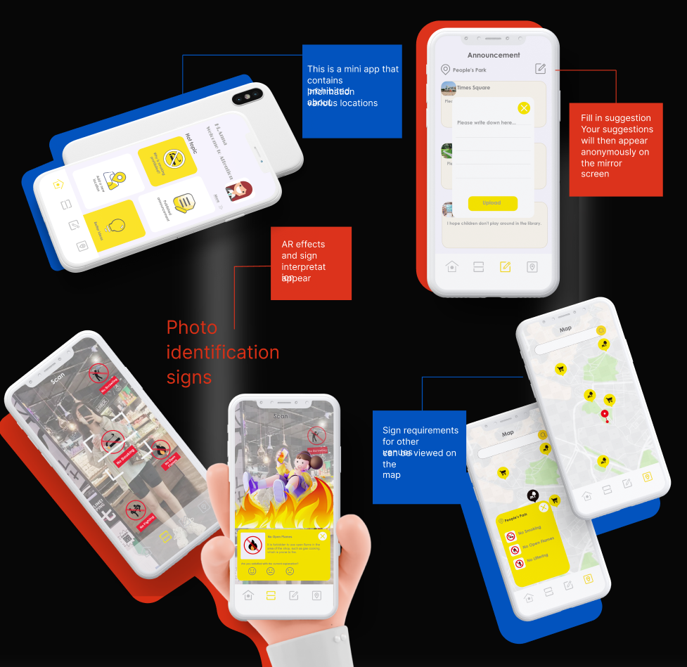

Project 01
Collection Space: 数字映射
通过 AR 技术将碎片化的软件收藏映射到特定的物理空间，让数字资产在真实环境中重现价值，重构个人数字档案馆的访问逻辑。



核心交互逻辑
基于 Vuforia 引擎进行特征点捕捉，将虚拟 UI 层级绑定至物理坐标系，支持用户通过空间锚点自定义数字内容的地理标签。
Project 02
Attention: 禁止标志 AR 增强系统
结合实体镜面标识与数字交互，将原本被忽视的禁令转化为一种具有视觉冲击力和社会参与感的交互体验。


研究与痛点
通过 3ds Max 建模、Arduino 硬件监测与 Vuforia 图像识别构建反馈闭环，旨在解决城市环境中视觉疲劳导致的公共安全标识失效问题。